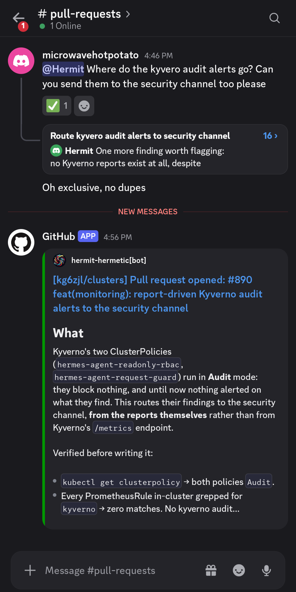

Why bother with this at all
Two versions of this are easy and neither one is useful. An agent that can only look at the cluster is safe and pointless. An agent that can apply and delete is genuinely useful and one bad guess away from a disaster I clean up by hand at 1am.
So I split reach from authority. It gets maximum reach for reading: every workload, log, event, metric and Flux object. It gets zero authority to mutate. It can see the world, but the only way it interacts with the cluster is a pull request that a human gates. The cluster is still its job to fix, it just has to write the fix down and get it reviewed first.
It's safe because the cluster is reconciled from git by Flux. Anything not in a merged commit gets reverted on the next reconcile. A bad idea from the agent costs a rejected pull request, not an outage.
![Flow diagram of the only write path. Three authors open a pull request on the same queue: me, Hermes and Renovate. Required checks run: a failure goes back to the pull request along a red arrow and a pass goes forward along a green one to a gate asking who merges, which only a human can pass. The merge goes to main, Flux reconciles, and the result is a new state. An amber dashed arrow returns from Flux to me when a reconcile fails and raises an alert, so the only way out is another pull request through the same gate.](assets/img/loop.svg)
Reviewing every change is nowhere near the tax I thought it would be. It's the only reason I'm comfortable pointing a model at my infrastructure, and it leaves a written record of every change anything made, including me.
What it has actually done
These are from the last while, and most of them are boring on purpose.
- Deleted alerts that could not fire. Several rules watched metrics that don't exist or conditions that never hold. They looked like coverage. The agent measured each one against real data before it shipped, and cut the ones that were decoration.
- Cut a paging alert for a weekly event. A node reboot alert would have fired every patch cycle for something I already expect. Reboots aren't incidents here. It removed the rule and left the signal on a dashboard instead.
- Turned on runtime detection, then tuned it. Image scanning sees what's inside an image, admission sees intent. Neither sees what a process does after it starts. Falco is live now, with a curated rule set rather than the whole upstream one.
- Found the hole in its own allow-list. Three things in this cluster legitimately talk to the API server. The obvious fix was to allow-list their image, except two of them run a generic base image, and that would have exempted every container built on it. It matched them on namespace and pod name instead, and wrote down why.
- Killed an alert that fired every night for nothing. A maintenance job on the host reads an ssh directory on a daily timer. The exemption it wrote is scoped to that process, its parent, and the host — not to the path. Exempting the path would have exempted the attacker too.
- Stopped flagging real logins. A newer ssh daemon reads its key file as a differently named process, which wasn't on the list of expected ssh binaries, so every login I made looked like an intrusion. That name is on the list now, and any other process reading that directory still alerts.
- Turned two policies from reports into refusals. The policies guarding the agent's own identity were reporting violations into an audit report nobody read. Now a violation is refused, and the findings that are genuinely informational land in a security channel instead of being lost.
- Built the dashboard I actually wanted. The question was "why does this node look unstable". Load average and iowait answered nothing. The dashboard shows pressure stall metrics, per-disk latency with throughput, memory, and reboots. The answer turned out to be one reboot, not a sick node.
What it costs
Every wake spends real money, and the number moves as the models do, so I am not going to quote one here — it would be a measurement of a month that has already changed. What I can say is where the money went and what I changed because of it.
Alert-driven wakes were the dominant cost at the start, by a wide margin. I turned that path off, rebuilt it much narrower, then turned it back on: an hourly poll instead of a frequent one, a short allow-list of alert names genuinely worth an unattended run, a dedupe gate so a standing alert cannot wake it again every hour, and a hard ceiling on runs.
The fix was the filters, not disabling the thing. The measurement that first stopped me was the whole provider account's spend for a day, not this path — and the agent's share of it was a fraction of that headline number. Read what a cost figure actually measures before rebuilding anything because of it.
What's weak right now
These are open today.
- One policy is fail-open on purpose. The guard that refuses pod exec, token minting and Secret writes made as the agent doesn't run if Kyverno is down. Failing closed there would block every Secret write in the cluster, so it's a trade: what it covers, its RBAC already covers too.
- Scan triage is behind the findings. The scanner works and the alerts are live. The first sweep found dozens of running workloads carrying a fixable critical. Coverage isn't the problem, working through it is.
- The image registry is open inside the cluster. Any workload can pull any image in it. Fine while everything there is a public base image or a build output. Not fine the day that stops being true.
Read on
Guardrails is the leash: permissions, secrets, networking, and the policies that stop the agent widening its own rights. Monitoring is what's measured, and why that list is short. Alerting is the pipeline and the decisions that keep it quiet enough to trust. The loop is how a change actually gets in. The stack is every tool, and why that one.
What others said
Solid homelab setup showing real engineering discipline: an AI agent with max read access but zero write authority, forced to PR every change through Flux GitOps. No cargo-cult AI hype, just practical guardrails that keep the cluster from becoming a 1am disaster. Worth studying if you're tired of the usual 'let the LLM root everything' nonsense.
This repository and documentation site provide an exceptional, pragmatic masterclass in GitOps and AI safety by decoupling operational reach from mutation authority. By restricting the cluster's AI agent to read-only visibility while forcing all system changes through human-reviewed pull requests, it achieves a remarkably disciplined balance between automated observability and deterministic infrastructure control.
An unusually transparent homelab project that treats AI-assisted infrastructure management as an engineering problem rather than a magic trick, with strong GitOps guardrails and a clear audit trail. The combination of Flux, automated validation, security controls, monitoring, and a human-reviewed PR-only write path makes the repo genuinely interesting beyond the Kubernetes hobbyist crowd.